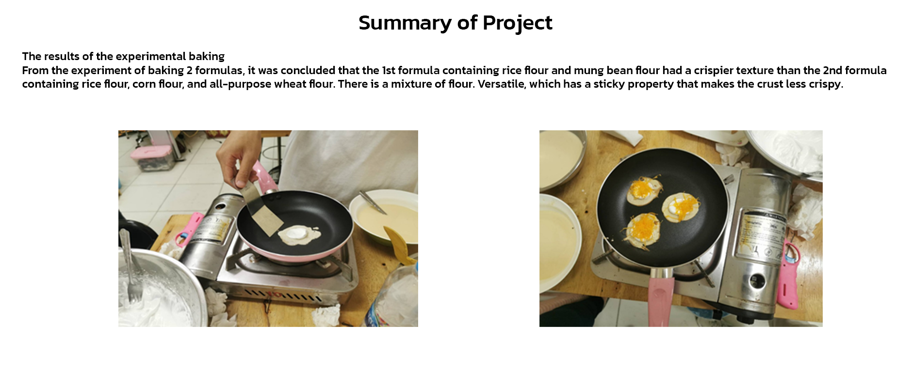

Comparison between 2 formulas of Kanom Bueng Flour
Recipe 1 Ingredients
1 Rice flour 150 grams
2 mung bean flour 50 g
3 Lime juice 100 grams
4 1-2 chicken eggs
5 Palm sugar 100 grams
6 100 grams of cold water
Properties of each flour contained in the recipe
1."Rice flour" (Rice flour)
- Flour made from rice grains It looks like a white powder that is slightly rough on the hand. When cooked, it looks cloudy and crumbly. If
Leave to cool to form a lump. crumbly, not sticky therefore suitable for cooking who want to stay crumbly, not sticky
such as Kanom Kee Noo, Banana Candy, Kanom Jeen noodles, etc. In the past, they were popular among themselves. washing the rice first Soak the rice with water to cover it.
Soak until the rice is soft. It is easy to mill nowadays. It is popular to grind with an electric grinder. Grind it thoroughly and then wrap it in white cloth. Bang Thap wastewater will be.
Rice flour called fresh flour
2. "Mung bean starch" (Mung bean starch)
- It is a starch extracted from mung beans. Dried seeds look like small granules. Touch the surface and then rub your hands. Before use, it should be ground.
powder first When cooked, it looks quite thick and clear. When it cools, it clumps together. stay quite sticky
Suitable for making foods that need clarity, such as Salim, forget-me-not desserts, etc.
Recipe 2 Ingredients
1 rice flour 150 g.
2 mung bean flour 50 g.
3 Lime juice 100 g.
4 Chicken eggs 1-2 eggs
5 Palm sugar 100 g.
6 100 grams of cold water
Properties of each type of starch contained in the recipe.
1."Rice flour" (Rice flour)
- Flour made from rice grains It looks like a white powder that is slightly rough on the hand. When cooked, it looks cloudy and crumbly. If
Leave to cool to form a lump. crumbly, not sticky therefore suitable for cooking who want to stay crumbly, not sticky
such as Kanom Kee Noo, Banana Candy, Kanom Jeen Noodles, etc. In the past, it was popular to mill among themselves. washing the rice first Soak the rice with water to cover it.
Soak until the rice is soft. It is easy to mill nowadays. It is popular to grind with an electric grinder. Grind it thoroughly and then wrap it in white cloth. Bang Thap wastewater will be.
Rice flour called fresh flour
2. "Corn Starch" (Corn Starch)
- It is a starch extracted from corn kernels. It looks like a white-yellow powder, and the surface of the powder is smooth and slippery when touched.
Cook until it looks thick and clear, not easy to return. When the dough is formed, it will settle before it becomes crumbly and shiny in the pastry.
Thai sweet is popular to mix with food to need a thick consistency. When touched, the texture of the powder is smooth and fine.
3. "All-purpose flour" (All purpose Flour)
- Made from fermented wheat And the light type mixed with 9-10 per cent protein. The flour is white. looks rough but
Less than bread flour, giving a moderate stickiness But the quality can't compete with bread flour. It can be used to make many kinds of products such as
Cookies, Pies, Crispy Salted Curry Puffs
How to make Kanom Bueang

Step 1
Take all the flour Sift into the mixing bowl for both formulas.
Split into two bowls

Step 2
Then slowly add lime water (cold water) and mix
When the ingredients are combined Put the eggs in People mix ingredients to make meat
The same is followed by adding palm sugar. Crush palm sugar until dissolved, and stir
until the sugar and flour dissolve into homogeneous and make a filter so that
The mixture of flour is smoother. (do the same for both recipes)

Step 3
Cover the dough with plastic wrap. Then rest the dough for at least 30 minutes to 1 hour.

Step 4
Put the egg whites into a bowl and beat the egg whites until foamy, followed by
put lemon juice in it Beat the ingredients together. Gradually add the icing sugar and beat until fluffy and creamy.

Step 5
Heat the pan. Pour the flour into it and use a spoon to turn it into an oval sphere
as desired. When the dough starts to cook I put the cream.

Step 6
Followed by adding golden threads or placing raisins as desired.

Step 7
Then fold it in half and bring it up to rest on the grill.

Step 8
That's it, it's done. Arrange on a plate and be ready to serve.
